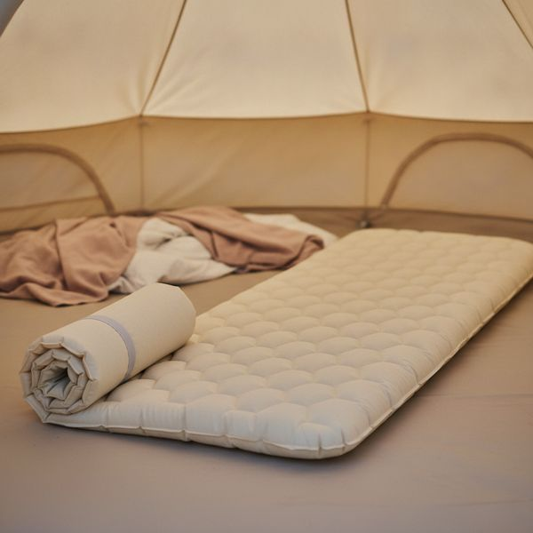
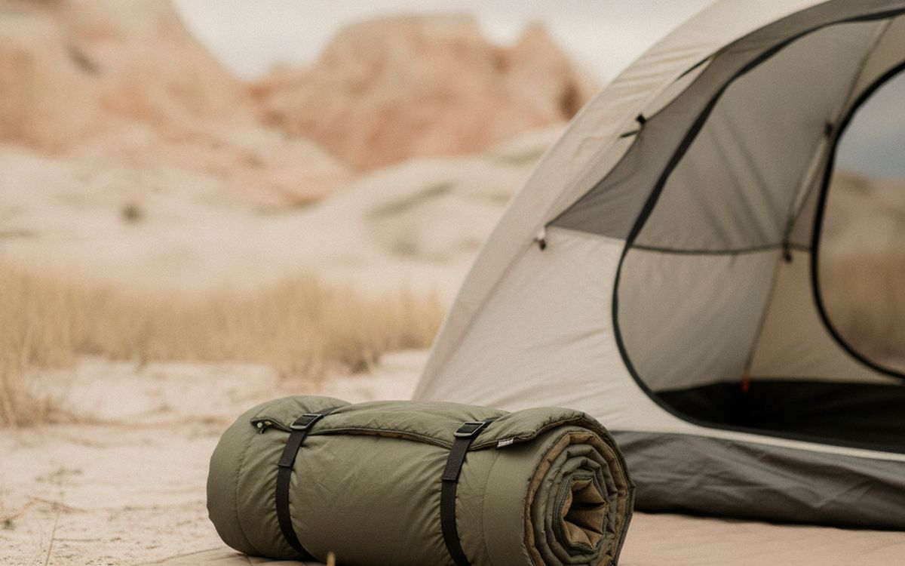
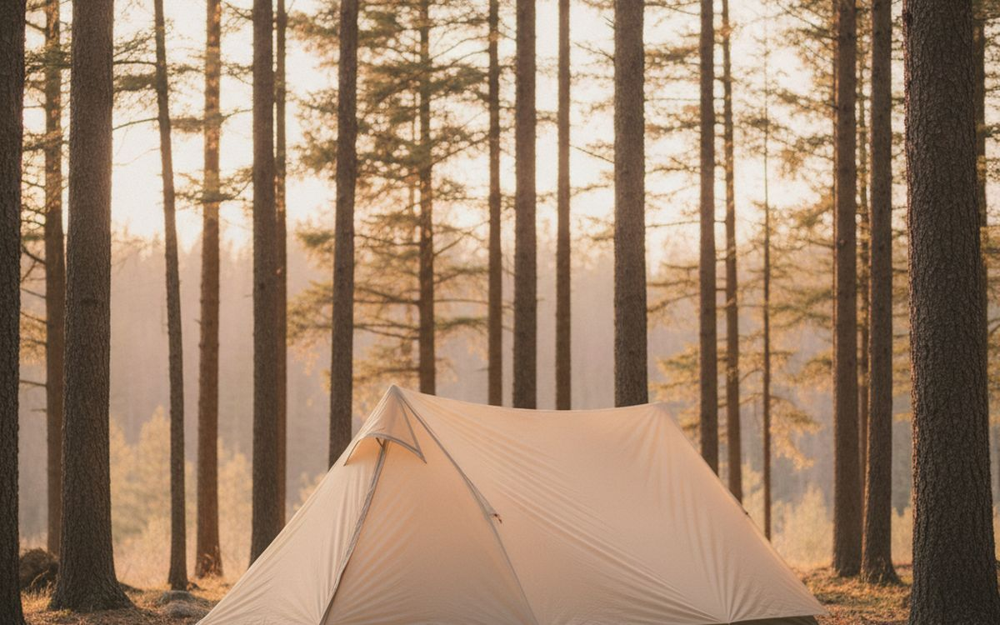
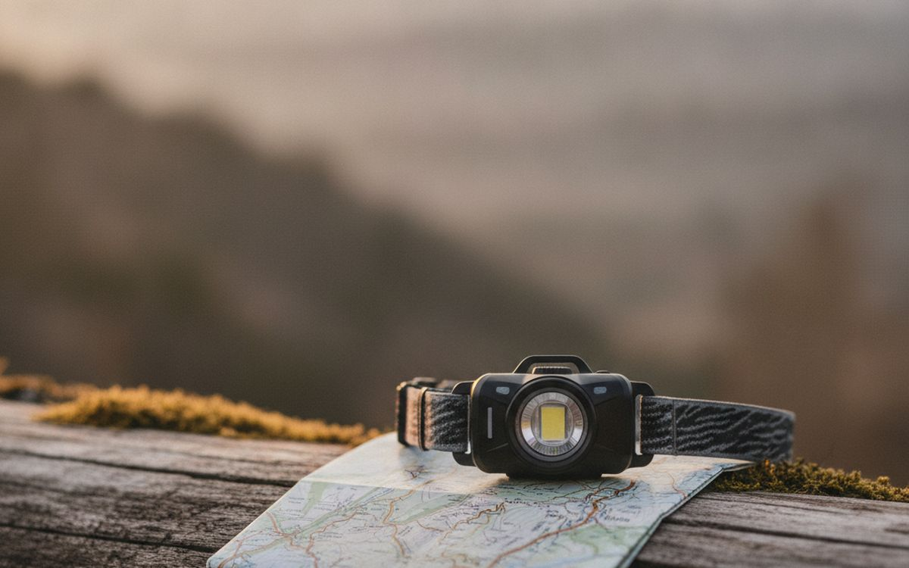
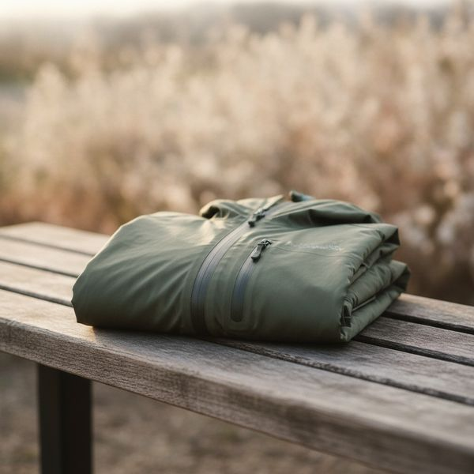
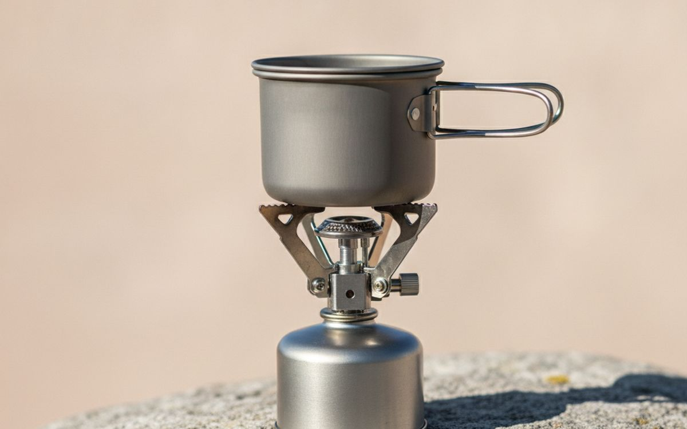
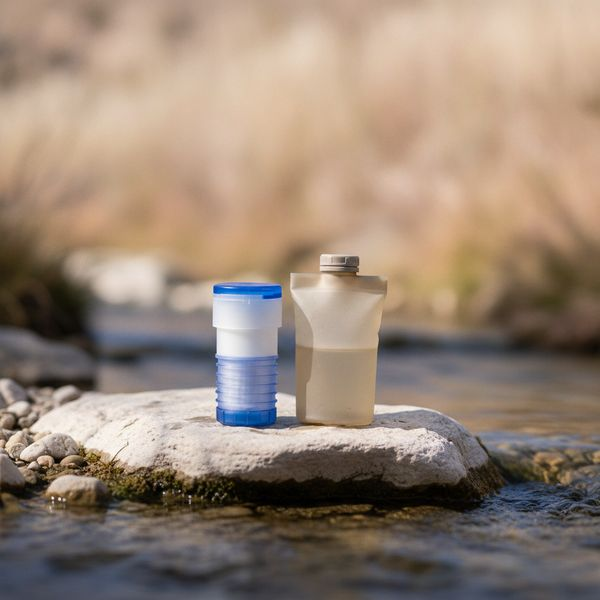
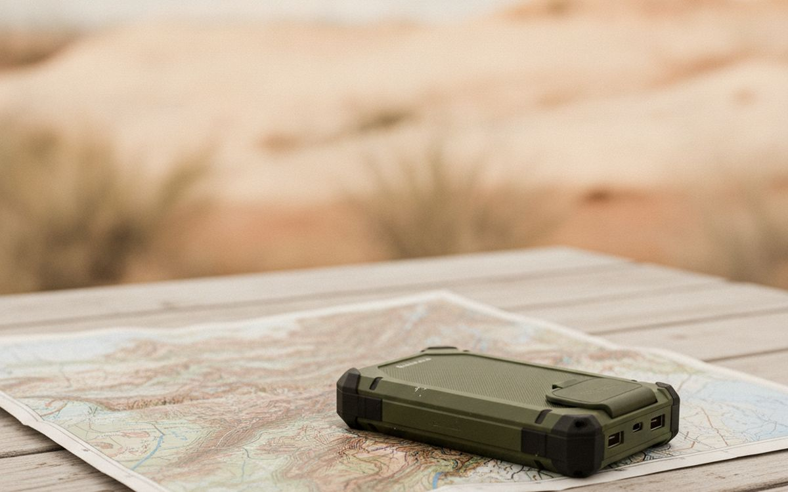
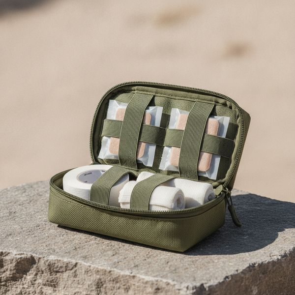
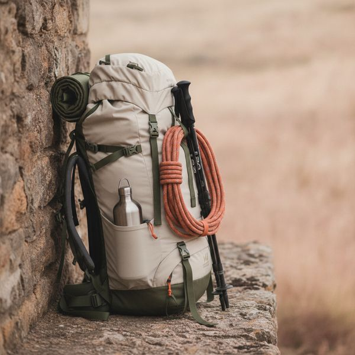

Ten things ranked by what happens when the night is colder or wetter than forecast.
Camping gear is marketed on sunny photographs and judged on bad nights. Everything works in fine weather. What separates good kit from expensive kit is whether it still works at 3am when the temperature dropped ten degrees below forecast and the rain arrived early.
So the ordering here follows consequence. Sleep and warmth come first, because being cold and tired makes everything else worse and is the reason most people decide they dislike camping. Cooking and comfort come after.
A note on safety: nothing here substitutes for telling someone where you are going, checking the forecast, and turning back when conditions change. Gear extends your margin; it does not replace judgement.
Prices are approximate at the time of writing. Outdoor equipment discounts heavily at the end of each season.
Disclosure. The links on this page are affiliate links. If you buy through one we may earn a commission at no extra cost to you. It does not affect what makes this list or the order it is in.
How we picked
We rank by what fails first when conditions get worse, drawing on published field testing, manufacturer temperature and waterproofing standards, and long-run owner reports. We have not personally used every item here in the field. Where the honest advice is to rent, borrow or buy second-hand rather than purchase, we say so.
At a glance
Prices are approximate at the time of writing and change often.
The picks

1
The thing people get wrongAn insulated sleeping pad with a real R-value
$70–200
Almost everyone who has a cold night blames the sleeping bag, and almost always the pad was the problem. The ground draws heat out of you far faster than air does, and a bag compressed underneath your body has essentially no insulating loft left. The number that matters is R-value: roughly 2 is fine for summer, 4 or above for shoulder seasons, 5 plus for winter. Buy the pad before you upgrade the bag. A thick foam pad is cheap, indestructible and warm, and an inflatable one is far more comfortable but can puncture — carry the patch kit it came with.
Why it is here
- Fixes the actual cause of most cold nights
- R-value is a comparable, honest number
- Foam versions are cheap and unpuncturable
Worth knowing
- Inflatables puncture at the worst moment
- High R-value pads pack larger

2
Read the rating properlyA sleeping bag rated for real conditions
$90–300
Bag ratings are widely misread. Most list a comfort rating and a lower limit; the limit is survival, not sleep, and buying to it means being cold all night. Buy to the comfort rating and add a margin, because forecasts are wrong and valleys are colder than the town whose weather you checked. Down is lighter, packs smaller and lasts longer, but loses most of its insulation when wet and costs more. Synthetic is bulkier and still works damp, which matters in a wet climate. Store it uncompressed at home — leaving it in the stuff sack is how a good bag dies.
Why it is here
- Comfort rating is the number to buy to
- Down is lighter; synthetic works when damp
- A good bag lasts a decade if stored properly
Worth knowing
- Ratings are routinely misread as sleep temperature
- Down is useless once genuinely wet

3
Where cheap really showsA three-season tent with a full-coverage fly
$150–450
A cheap tent is fine until the first sustained rain, and then it is a very bad night. The features that matter are a rain fly that reaches close to the ground rather than a partial cap, sealed or taped seams, and a bathtub floor whose edges curve up so ground water cannot run in at the seam. Poles are the other failure point — aluminium bends and can be splinted, fibreglass shatters and cannot. Practise pitching it in the garden once. Learning your tent for the first time in the dark and the rain is genuinely miserable.
Why it is here
- Full fly and taped seams are what keep rain out
- Bathtub floor stops ground water at the seam
- Aluminium poles can be splinted in the field
Worth knowing
- Fibreglass poles shatter and end the trip
- Cheap tents fail specifically when it matters

4
Cheapest essentialA headtorch with a red mode
$25–60
Hands-free light is not a convenience outdoors, it is how you cook, pitch and navigate after dark without putting a torch in your teeth. Two features earn their place. A red mode preserves your night vision and does not blind everyone you turn to look at, which matters in a shared camp. And a water resistance rating of at least IPX4, because a headtorch that dies in drizzle is worse than no plan at all. Rechargeable is convenient; a model that also takes standard cells is better for long trips where you cannot charge anything.
Why it is here
- Red mode protects night vision and the camp's
- Water resistance is non-negotiable outdoors
- Cheap, light, and used every single trip
Worth knowing
- Rechargeable-only is a liability on long trips
- Cheap models overstate their brightness

5
Water resistant is not waterproofA proper waterproof jacket with taped seams
$100–350
Water resistant and waterproof are different claims and only one of them keeps you dry in a two-hour downpour. Look for taped seams and a hydrostatic head figure, which measures how much water pressure the fabric holds before leaking. A hood that adjusts and actually turns with your head is the difference between usable and infuriating. Breathability matters as much as waterproofing, because sweating inside a sealed shell gets you just as wet. Reproof it once a season — jackets that have stopped working usually just need the outer coating restored, not replacing.
Why it is here
- Taped seams and hydrostatic head are measurable
- A properly adjusting hood transforms usability
- Reproofing revives a jacket that seems finished
Worth knowing
- Breathability and waterproofing trade against each other
- Needs seasonal reproofing to keep working

6
Simplest thing that worksA canister stove and a pot
$40–120
For most camping, a screw-on canister stove is the right answer: it lights instantly, simmers, packs to the size of a fist and needs no priming. Integrated systems boil faster and shield the flame from wind, which matters more than raw output — wind is what actually stops water boiling. Two safety points that are not optional. Never run a stove inside a tent or a closed porch, because carbon monoxide is odourless and has killed campers doing exactly that. And canister gas performs poorly near freezing, so cold-weather trips want a liquid fuel stove instead.
Why it is here
- Instant, simmers, packs tiny
- Integrated systems resist wind well
- Fuel canisters are widely available
Worth knowing
- Never safe to use inside a tent — CO risk
- Poor performance near freezing

7
Match it to the actual riskA water filter or purifier
$30–110
Carrying all your water is heavy and limits where you can go, and a filter removes that constraint. Understand what you are buying, though. A hollow-fibre filter at 0.1 micron removes bacteria and protozoa, which covers most temperate backcountry. It does not remove viruses, which matter in areas with human or livestock contamination upstream — there you want a purifier, chemical treatment or boiling. Filters are ruined by freezing, because ice cracks the fibres invisibly, so sleep with it in your bag on cold nights. Backflush it regularly or the flow rate collapses.
Why it is here
- Removes the need to carry all your water
- Hollow-fibre filters are light and fast
- Cheap relative to the freedom it buys
Worth knowing
- Standard filters do not remove viruses
- One freeze ruins the element invisibly

8
Two answers to one problemA power bank and a paper map
$40–80
Phone navigation is genuinely excellent right up to the moment the battery dies, and cold weather flattens a battery far faster than the percentage suggests. A power bank covers that, and keeping the phone warm inside a jacket rather than in an outside pocket does almost as much. But carry a paper map and know roughly how to read it, because a power bank fails too, and a phone in a puddle fails instantly. This is the one entry that is deliberately redundant, and redundancy is the point — the cost of being wrong here is much higher than the weight.
Why it is here
- Covers the main failure mode of phone navigation
- A paper map never runs out of battery
- Both together weigh very little
Worth knowing
- Cold drains batteries faster than indicated
- A map is only useful if you can read it

9
Blisters end more trips than injuriesA first aid kit with blister supplies
$30–70
Serious injury is rare. Blisters are near-universal and they are what actually turns a good walk into a limp back to the car. Carry blister plasters and tape, and use them at the first hot spot rather than once the skin has gone — that timing is the whole trick. Beyond that, the kit should match your trip length and how far you are from help: a day walk near a road needs very little, a remote multi-day trip needs real thought. A wilderness first aid course is worth more than any kit you can buy, if you go out often.
Why it is here
- Blister care prevents the most common trip-ender
- Light for the problems it covers
- Forces you to think about distance from help
Worth knowing
- A kit is not a substitute for training
- Contents expire — check between seasons

10
Fit beats brandA comfortable pack that actually fits
$120–350
A pack is the one item where fit matters more than any feature list, because a well-fitted cheap pack carries better than a badly fitted expensive one. The measurement that matters is torso length, not your height, and most good packs come in sizes or have an adjustable harness. The hip belt should carry roughly eighty percent of the weight on your hips, with the shoulder straps only stabilising. Go to a shop and have it loaded and fitted if you possibly can — this is the single item on this page where buying online blind most often goes wrong.
Why it is here
- Correct fit outperforms an expensive bad fit
- Hip belt should carry most of the load
- A good pack lasts many years
Worth knowing
- Sized by torso length, not height
- The worst item to buy online untried
Common questions
Why was I cold even in a warm sleeping bag?
Almost certainly the sleeping pad. Your body compresses the insulation underneath you to nothing, so the ground conducts heat straight out. Check the pad's R-value before spending anything on a warmer bag.
Down or synthetic?
Down if you want light and packable and can keep it dry. Synthetic if you camp in a wet climate or cannot be confident of that, because synthetic still insulates when damp and down does not.
What should I buy first?
Pad, bag, tent, in that order, then a headtorch. Those four decide whether you sleep. Everything else can be borrowed, improvised or bought later once you know you enjoy it.
Is it safe to cook inside the tent porch if it is raining?
No. Carbon monoxide from a stove is odourless and has killed people sheltering from exactly that rain. Cook outside under a tarp, or wait. This is the one rule on this page with no exceptions.
← All guides
We have applied to the Amazon Associates Program. We are not an Amazon Associate yet and earn nothing from Amazon links today. As an AliExpress affiliate we earn from qualifying purchases. Prices and availability are accurate as of the date of publication and may change.